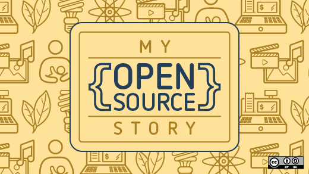

My Open Source Story: Tarus Balog
Staking a career on open source software's success

Image by :
Opensource.com. CC BY-SA 4.0.
I have enjoyed reading the stories others have shared about how they got started with open source software, so I thought I'd add mine. It is different in that I came to open source purely for business reasons. While I later embraced the open source way for reasons such as personal freedom and community, my initial exposure to it came from trying to find the best solution to a business problem.
In the early 1990s, my career had led me to the field of network management. While the term "network" may make you think of routers and switches, back then network management was concerned with anything connected to computer networks. This included network infrastructure and services as well as the applications and software that makes them possible, such as databases. Enterprise-grade software back then ran solely on Unix variants such as Solaris and HP-UX, and the platforms built for network management were both expensive and complex.
The problem with proprietary
I worked for a number of companies that sold software management solutions, and I was brought in to implement them after the sale. While the work was usually rewarding, it could be very frustrating. On more than one occasion I experienced the following:
I would fly out to a customer site for a week. On Monday we would install the software. This often took several hours, because in addition to the actual installation we would have to go through a time consuming process of tying a license key to particular server hardware. By the end of the day, we would have the application up and running and we could start the customization process.
On Tuesday I would find a bug in the software. An evil, Madagascar-cockroach-sized bug that pretty much stopped us in our tracks. I would call the vendor and they would often inform me that they were aware of the bug and had fixed it. Great! Send me the patch. They would then tell me that they couldn't do that. Instead, I would have to wait for the next patch release cycle, which could be weeks away. I'd end up stuck with non-refundable airline tickets at a customer site with nothing to do. Considering that the company that employed me was expecting to bill the client for my time, it often put me in an uncomfortable situation.
The other big issue we would encounter was that there was rarely one tool that addressed all of the customer's needs. We would install a number of different products and then find some way to "glue" them together, using scripts and other tricks since there was little motivation for one vendor to provide an easy method for products from other vendors to interact with theirs. Granted, this was a boon to my employer because the scripts would tend to break every software update. It seemed to be to be a very inefficient way to solve a problem.
But the biggest issue was with the nature of the applications themselves. Quite frequently they would force you to do things a certain way, even if that meant you had to change your business processes in order to fit that model. Think about it—in most cases, the internal processes a company uses and develops are what separate them from other vendors and provide a competitive advantage. Forcing those to change to fit some arbitrary framework seems wrong—shouldn't the tools be flexible enough to change to fit each situation?
The open source solution
When some friends told me about OpenNMS, a project to build an enterprise-grade management framework using open source, I was intrigued. It seemed to solve all of these problems. Find a bug? Fix it then and there. Write some glue? Commit it into the code so that it can become part of the solution instead of a separate add-on.
But the biggest thing was that we finally had a platform that could be molded to fit the needs of the end users, not the other way around. The flexibility that was built into the application from day one also meant that it took less time to deploy. Projects that used to take months could be done in weeks, meaning the client could start to see a benefit that much sooner.
I got a job with OpenNMS in September of 2001. In May of 2002, the company that started the project decided to focus on other things, but I was so certain that this was the way to go that I quit and started a company to keep it alive. I have nearly zero talent as a coder, but I was so convinced that I could find like-minded people to work on it that I was willing to stake my career on it.
It was the best professional decision I've ever made.
This is not to say that it has always been easy. A lot of people—at least back then—thought "free software" meant "free solution." In many cases it does make the best business sense to invest in open source, but it is sometimes hard to frame that it is the flexibility of the software that drives value more than the cost savings. Luckily, as open source has become ubiquitous, the job has gotten easier.
Embracing the open source way
In the beginning, my open source experience was limited to OpenNMS and the software immediately related to it, such as Linux, PostgreSQL, and RRDtool. As I got more comfortable with the environment and open source communities, I started using open source software more and more. Almost every device I use today, from my desktop to my mobile devices to the computer that records the television shows I watch, is running open source software.
I've now been making a living, putting food on the table, and paying my mortgage for nearly 15 years working at an open source company. The best part is that by running an open organization, we've been able to create a small but amazing team that helps make OpenNMS the management platform of choice for some of the world's biggest companies. By pursuing open source as strictly a business decision, we have been able to execute our mission statement of "Help customers, have fun, and make money".
It has greatly enriched my life, the lives of many people around me, and our customers' bottom lines.
My Open Source Story
The My Open Source Story series highlights stories about how people from all walks of life got started in open source and what tools they most often use. To share your story, contact us at: open@opensource.com.